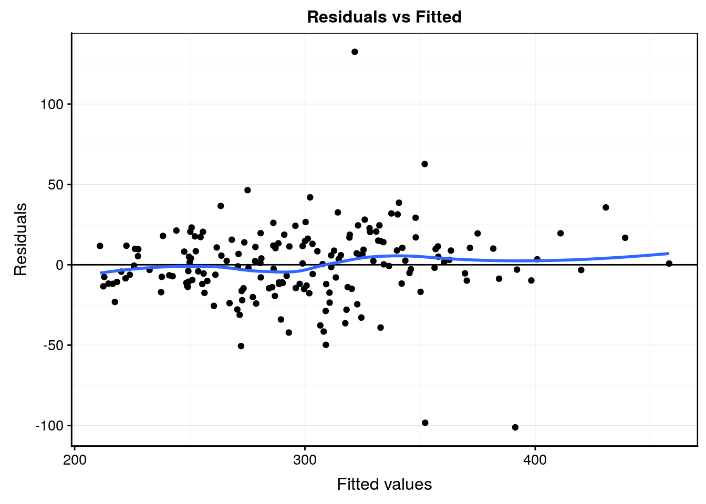

11.5 Effet aléatoire
Jusqu’à présent, nous avons considéré que nous échantillonnons toutes les modalités qui nous intéressent pour les variables facteurs explicatives. Il se peut que les modalités soient trop nombreuses et que nous ne puissions n’en étudier qu’une petite fraction. Nous avons deux possibilités.
Soit nous choisissons aléatoirement quelques modalités, et nous les étudions systématiquement pour les différentes modalités de l’autre variable. Nous nous ramenons à un modèle à facteurs fixes mais nous ne pouvons donner une réponse que pour les modalités échantillonnées (restriction de la population statistique étudiée).
Soit, nous échantillonnons aléatoirement dans la population un nombre restreint de modalités.
Considérez un plan d’expérience relativement classique où différents items sont comparés dans une sélection au hasard de réalisations. En agronomie, il peut s’agir de comparer différentes variétés d’une céréale cultivées dans quelques fermes. Si nous ne sommes intéressés que par ces fermes-là, alors les effets sont fixes, pas de problèmes. Par contre, si nous sommes intéressés par la production de cette céréale dans une région donnée, les fermes représentent seulement un échantillon de l’ensemble des fermes qui s’y trouvent. Autrement dit, toutes les modalités possibles ne sont pas reprises dans l’expérience. Dans ce cas, nous parlerons d’un effet aléatoire pour l’effet ‘ferme’.
Prenons un exemple concret. Dans une analyse réalisée en 1972 par Davies and Goldsmith, six lots différents de pénicilline provenant d’une production de ce médicament sont comparés afin d’estimer la variabilité de l’efficacité antibiotique en fonction du lot de production. La mesure consiste à incuber une bactérie Bacillus subtilis dans une série de boites de Pétri (variable plate). Dans chaque boite, un volume de solution des six lots de pénicilline (variable sample) sont placés à espacement réguler. L’effet de l’antibiotique est mesurée via le diamètre de la zone de non croissance de la bactérie autour du point d’injection (variable diameter).
pen <- read("Penicillin", package = "lme4")
pen# # A tibble: 144 x 3
# diameter plate sample
# <dbl> <fct> <fct>
# 1 27 a A
# 2 23 a B
# 3 26 a C
# 4 23 a D
# 5 23 a E
# 6 21 a F
# 7 27 b A
# 8 23 b B
# 9 26 b C
# 10 23 b D
# # … with 134 more rowsÉtant donné que chacun des six lots d’antibiotiques est testé dans chaque boite de Pétri, nous serions tentés de penser que nous avons un plan croisé classique. La fonction replications() permet de déterminer rapidement le nombre de réplicats dans un plan d’expérience. Il s’utilise avec les mêmes données et la même formule que celle qu’on utiliserait pour faire l’ANOVA. Ici, nos données sont balancées, donc idéales avec 24 réplicats pour chaque lot (sample) et 6 mesures par boite de Pétri (plate), mais nous n’avons qu’une seule mesure par lot et par plaque. Cela nous empêche d’étudier les interactions éventuelles (si les boites de Pétri sont produites de manière identiques et placées au hasard dans un incubateur fournissant un environnement homogène, il y a peu de chances qu’il y ait de telles interactions).
replications(data = pen, diameter ~ sample + plate)# sample plate
# 24 6Visualisons ces données. En absence de réplicats pour chaque niveau plate par sample, le graphique suivant offre une bonne vision d’ensemble des données :
chart(data = pen, diameter ~ plate | sample) +
geom_point()
Sur base du graphique, nous pouvons observer des différences entre lots (le ‘F’ semble moins efficace, alors que les lots ‘A’ et ‘C’ montrent le plus grand diamètre d’action). De plus, des variations d’une boite de Pétri à l’autre sont observables. Par exemple, la boite ‘g’ montre des résultats faibles partout. Si nous considérons sample et plate comme facteurs fixes, nous serions tentés d’utiliser une ANOVA à deux facteurs classique sans interactions. Ici, nous n’avons pas de test de variance qui prenne simultanément deux facteurs en compte. En absence d’interactions entre les deux facteurs, nous pouvons toujours réaliser deux tests séparés mais cela reste du domaine du “bidouillage” (nous verrons une meilleure approche via l’analyse des résidus plus loin) :
bartlett.test(data = pen, diameter ~ sample)#
# Bartlett test of homogeneity of variances
#
# data: diameter by sample
# Bartlett's K-squared = 0.56002, df = 5, p-value = 0.9898bartlett.test(data = pen, diameter ~ plate)#
# Bartlett test of homogeneity of variances
#
# data: diameter by plate
# Bartlett's K-squared = 3.4151, df = 23, p-value = 1Ici, ni le graphique, ni les tests de Batlett ne montrent une quelconque hétérogénéité des variances. Nous pouvons poursuivre avec l’ANOVA classique…
anova(anova. <- lm(data = pen, diameter ~ sample + plate))# Analysis of Variance Table
#
# Response: diameter
# Df Sum Sq Mean Sq F value Pr(>F)
# sample 5 449.22 89.844 297.089 < 2.2e-16 ***
# plate 23 105.89 4.604 15.224 < 2.2e-16 ***
# Residuals 115 34.78 0.302
# ---
# Signif. codes: 0 '***' 0.001 '**' 0.01 '*' 0.05 '.' 0.1 ' ' 1Les deux facteurs sont significatifs au seuil \(\alpha\) de 5%. Pour finir, une analyse des résidus confirme que les conditions d’application de l’ANOVA sont rencontrées :
anova. %>.%
broom::augment(.) %>.%
car::qqPlot(.$.std.resid, distribution = "norm",
envelope = 0.95, col = "Black", xlab = "Quantiles théoriques (distri. normale)",
ylab = "Résidus standardisés")
# [1] 137 14Nous pouvons ensuite vérifier visuellement l’égalité des variances (bien mieux que le bricolage avec les deux tests de Batlett) avec un graphique issu du snippet .mlplot1 ou ... > models > linear > plot residuals versus fitted [chart, broom] qui permet de visualiser sur l’axe des ordonnées l’étalement des résidus en fonction des valeurs prédites par le modèle sur l’axe des abscisses. Cet étalement doit être relativement homogène (avec la ligne de tendance qui se rapproche de zéro) comme c’est le cas ici :
#plot(anova., which = 1)
anova. %>.%
chart(broom::augment(.), .resid ~ .fitted) +
geom_point() +
geom_hline(yintercept = 0) +
geom_smooth(se = FALSE, method = "loess", formula = y ~ x) +
labs(x = "Fitted values", y = "Residuals") +
ggtitle("Residuals vs Fitted")
Au final, les effets sample et plate apparaissent tous deux significatifs. Mais en considérant l’effet plate comme fixe, nous ne pouvons considérer que les résultats pour ces boites de Pétri-là, et aucunes autres. Cependant, il est évident que les 24 boites de Pétri ont été prises au hasard dans le lot de boites disponibles et que nous souhaitons interpréter l’analyse quelles que soient les boites de Pétri utilisées. Ainsi, nous considèrerons maintenant l’effet plate comme un effet aléatoire. Cela signifie que nous considérons une réponse plus générale suivant une distribution Normale pour les boites de Pétri. Un modèle sans interactions avec un effet aléatoire s’écrit dès lors :
\[y_{ijk} = \mu + \tau1_j + \tau2_k + \epsilon_i \mathrm{\ avec\ } \tau2_k \sim N(0, \sigma_{\tau2}) \mathrm{\ et\ } \epsilon_i \sim N(0, \sigma) \]
L’équation du modèle n’a pas changé, mais nous avons maintenant un terme aléatoire supplémentaire, \(\tau2_k\) dont il faudra tenir compte dans les calculs. Les hypothèses nulle et alternative pour ce facteur s’écrivent également différemment. Nous n’indiquons plus quelles moyennes de toutes les modalités sont égales (il peut éventuellement y en avoir une infinité possibles). Sous \(H_0\), l’effet lié aux boites de Pétri est null. Ceci sera obtenu lorsque l’écart type de la distribution Normale associée (\(\sigma_{\tau2}\)) est lui-même nul :
- \(H_0: \sigma_{\tau2} = 0\)
- \(H_1: \sigma_{\tau2} > 0\)
Dans R, la fonction lm() utilisée jusqu’ici ne prend pas en compte les facteurs aléatoires. Il existe plusieurs implémentations différentes, par exemple avec aov(), nlme::lme() ou encore lme4::lmer()/lmeTest::lmer(). De plus, ces modèles sont rendus plus difficiles car les spécialistes considèrent que la valeur p n’est calculable que dans certains cas bien précis. C’est la raison pour laquelle lme4::lmer() calcule le modèle, mais ne renvoie aucune valeur p. De plus, chaque fonction utilise une formulation différente, et renvoie les résultats différemment. Il est important d’avoir cela en tête, car si vous rechercher de la documentation concernant les modèles à facteurs aléatoires dans R sur Internet, vous risquez de vous perdre dans les différentes implémentations et explications… si ce n’est à considérer que différents points de vue co-existent actuellement !
Dans la suite, nous verrons deux modèles aléatoires particuliers qui ont une configuration permettant un calcul correct des valeurs de p : le modèle en parcelles divisées (split-plot) et le modèle à mesures répétées.
11.5.1 Modèle en parcelles divisées (split-plot)
Un des modèles pour lequel les valeurs p sont calculables est le modèle dit en parcelles divisées (split-plot en anglais). Cette situation apparait lorsque, parmi deux facteurs, l’un est plus difficile à diviser en sous-unités indépendantes. C’est le cas ici avec nos boites de Pétri qui forment chacune un petit microcosme unique. Il est possible de diviser la boite de Pétri en sous-régions. C’est ce qui a été fait ici pour tester les six lots, mais ces sous-régions ne sont pas indépendantes les unes des autres, elles continuent d’être liées entre elle au sein de la même boite de Pétri. Nous pouvons néanmoins considérer la boite de Pétri comme facteur aléatoire dans ce modèle split-plot. Dans ce cas, nous avons intérêt à utiliser lmeTest::lmer() qui calculera ces valeurs p là où elles sont pertinentes4. Dans la formule, un facteur aléatoire simple s’écrit (1 | facteur). Cela donne :
split_plot <- lmerTest::lmer(data = pen, diameter ~ sample + (1 | plate))
split_plot# Linear mixed model fit by REML ['lmerModLmerTest']
# Formula: diameter ~ sample + (1 | plate)
# Data: pen
# REML criterion at convergence: 308.2793
# Random effects:
# Groups Name Std.Dev.
# plate (Intercept) 0.8467
# Residual 0.5499
# Number of obs: 144, groups: plate, 24
# Fixed Effects:
# (Intercept) sampleB sampleC sampleD sampleE
# 25.167 -3.208 -0.250 -2.292 -2.208
# sampleF
# -5.208Attention, contrairement à lm() qui ajuste automatiquement une ANOVA sur des données qualitatives de type factor ou ordered, lmer() ne fait pas cela et considère toujours un autre modèle : une régression linéaire. Nous aborderons ce dernier modèle l’an prochain. Heureusement, la fonction anova() peut être appliquée ensuite pour obtenir la table de l’ANOVA :
anova(split_plot)# Type III Analysis of Variance Table with Satterthwaite's method
# Sum Sq Mean Sq NumDF DenDF F value Pr(>F)
# sample 449.22 89.844 5 115 297.09 < 2.2e-16 ***
# ---
# Signif. codes: 0 '***' 0.001 '**' 0.01 '*' 0.05 '.' 0.1 ' ' 1Le titre (“Type III … Sattertwaite’s method”) indique que ce n’est pas une ANOVA classique qui a été calculée. Nous n’entrerons pas dans les détails. En tous cas, vous ne voyez qu’une seule ligne dans ce tableau, relative au facteur fixe du modèle, sample. L’effet est ici significatif au seuil \(\alpha\) de 5%. C’est perturbant. Nous nous attendions à avoir trois lignes comme plus haut (deux facteurs fixes avec lm()) et à pouvoir interpréter aussi le facteur plate à partir de la table de l’ANOVA. Mais rappelons-nous que plate suit maintenant une distribution Normale dont nous devons estimer l’écart type \(\sigma_{\tau2}\). Cette dernière valeur est indiquée plus haut dans l’impression de l’objet split_plot. Retournez voir : nous avons une section Random effects: avec un groupe plate et en regard, dans la colonne Std.dev., nous avons la valeur de \(\sigma_{\tau2}\) qui vaut 0,85. Comment décider si rejeter \(H_0\) ou non par rapport à plate ? Une façon de faire est de calculer l’intervalle de confiance à (1 - \(\alpha\)) sur ce paramètre, et de vérifier s’il contient zéro (alors nous ne rejettons pas \(H_0\)) ou non (nous rejettons). La fonction confint() peut être utilisée pour calculer cet intervalle de condiance. Le calcul est un peu long avec la méthode par défaut, voir ?lme4::confint.merMod :
confint(split_plot)# Computing profile confidence intervals ...# 2.5 % 97.5 %
# .sig01 0.6243175 1.15107599
# .sigma 0.4768022 0.61436044
# (Intercept) 24.7615793 25.57175404
# sampleB -3.5153786 -2.90128807
# sampleC -0.5570453 0.05704527
# sampleD -2.5987119 -1.98462140
# sampleE -2.5153786 -1.90128807
# sampleF -5.5153786 -4.90128807L’intervalle de confiance qui nous intéresse est le premier, nommé .sig01. Le reste est relatif à un modèle linéaire que nous étudierons l’an prochain. Ignorons-les pour l’instant. Donc, notre intervalle de confiance va de 0,62 à 1,15. Cela signifie que zéro n’est pas compris dans l’intervalle. Nous rejettons \(H_0\) et nous concluons que le facteur plate est significatif au seuil \(\alpha\) de 5%.
Le travail d’interprétation du facteur aléatoire plate est terminé, mais il nous reste à présent à réaliser un test post-hoc de comparaisons multiples sur le facteur fixe sample. Cela se réalise de la même façon qu’avec l’ANOVA classique (code issu du snippet .hmanovamult ou ... > hypothesis test > means > anova - multiple comparisons [multcomp]) :
summary(anovaComp. <- confint(multcomp::glht(split_plot,
linfct = multcomp::mcp(sample = "Tukey")))) # Add a second factor if you want#
# Simultaneous Tests for General Linear Hypotheses
#
# Multiple Comparisons of Means: Tukey Contrasts
#
#
# Fit: lmerTest::lmer(formula = diameter ~ sample + (1 | plate), data = pen)
#
# Linear Hypotheses:
# Estimate Std. Error z value Pr(>|z|)
# B - A == 0 -3.20833 0.15875 -20.210 <0.001 ***
# C - A == 0 -0.25000 0.15875 -1.575 0.615
# D - A == 0 -2.29167 0.15875 -14.436 <0.001 ***
# E - A == 0 -2.20833 0.15875 -13.911 <0.001 ***
# F - A == 0 -5.20833 0.15875 -32.809 <0.001 ***
# C - B == 0 2.95833 0.15875 18.635 <0.001 ***
# D - B == 0 0.91667 0.15875 5.774 <0.001 ***
# E - B == 0 1.00000 0.15875 6.299 <0.001 ***
# F - B == 0 -2.00000 0.15875 -12.599 <0.001 ***
# D - C == 0 -2.04167 0.15875 -12.861 <0.001 ***
# E - C == 0 -1.95833 0.15875 -12.336 <0.001 ***
# F - C == 0 -4.95833 0.15875 -31.234 <0.001 ***
# E - D == 0 0.08333 0.15875 0.525 0.995
# F - D == 0 -2.91667 0.15875 -18.373 <0.001 ***
# F - E == 0 -3.00000 0.15875 -18.898 <0.001 ***
# ---
# Signif. codes: 0 '***' 0.001 '**' 0.01 '*' 0.05 '.' 0.1 ' ' 1
# (Adjusted p values reported -- single-step method).oma <- par(oma = c(0, 5.1, 0, 0)); plot(anovaComp.); par(.oma); rm(.oma)Ici, tous les lots diffèrent, sauf A-C et E-D. Si la première modalité était une situation de référence, nous aurions aussi pu utiliser la comparaison multiple de Dunnet en remplaçant "Tukey" par "Dunnet" dans le code ci-dessus. Dans ce cas, toutes les comparaisons deux à deux ne seraient pas réalisées, seulement les comparaisons au témoin, donc à la modalité de référence.
N’oublions par de réaliser une petite analyse des résidus de ce modèle pour vérifier qu’ils ont bien une distribution normale et que les variances sont homogènes (homoscédasticité).
split_plot %>.%
broom::augment(.) %>.%
car::qqPlot(.$.resid, distribution = "norm",
envelope = 0.95, col = "Black", xlab = "Quantiles théoriques (distri. normale)",
ylab = "Résidus standardisés")
# [1] 137 14#plot(split_plot, which = 1)
split_plot %>.%
chart(broom::augment(.), .resid ~ .fitted) +
geom_point() +
geom_hline(yintercept = 0) +
geom_smooth(se = FALSE, method = "loess", formula = y ~ x) +
labs(x = "Fitted values", y = "Residuals") +
ggtitle("Residuals vs Fitted")
Vous pouvez constater via ces graphiques que les résidus sont les mêmes que pour le modèle fixe. Nous concluons donc, encore une fois, que la distribution des résidus est compatible avec le modèle.
Maintenant, si nous considérons que sample est également un facteur aléatoire, car nous avons prélevé six lots au hasard parmi tous les lots produits par la firme pharmaceutique, alors nous devrons utiliser le modèle suivant utilisant deux facteurs aléatoires :
\[y_{ijk} = \mu + \tau1_j + \tau2_k + \epsilon_i \mathrm{\ avec\ } \tau1_j \sim N(0, \sigma_{\tau1}) \mathrm{, } \tau2_k \sim N(0, \sigma_{\tau2}) \mathrm{\ et\ } \epsilon_i \sim N(0, \sigma) \]
split_plot2 <- lmerTest::lmer(data = pen, diameter ~ (1 | sample) + (1 | plate))
split_plot2# Linear mixed model fit by REML ['lmerModLmerTest']
# Formula: diameter ~ (1 | sample) + (1 | plate)
# Data: pen
# REML criterion at convergence: 330.8606
# Random effects:
# Groups Name Std.Dev.
# plate (Intercept) 0.8467
# sample (Intercept) 1.9316
# Residual 0.5499
# Number of obs: 144, groups: plate, 24; sample, 6
# Fixed Effects:
# (Intercept)
# 22.97Inutile d’utiliser anova() ici puisqu’il n’y a plus aucun facteur fixe. Nous interprétons les deux facteurs à l’aide de leur écart types respectifs calculés comme 0,85 toujours pour plate et 1,93 pour sample. Calculons les intervalles de confiance sur ces écart types.
confint(split_plot2)# Computing profile confidence intervals ...# 2.5 % 97.5 %
# .sig01 0.6335665 1.1821040
# .sig02 1.0957897 3.5562909
# .sigma 0.4858454 0.6294535
# (Intercept) 21.2666276 24.6778119La première ligne .sig01 est relative à l’écart type plate avec un intervalle de confiance qui va de 0,63 à 1,18, et la seconde ligne .sig02 est relative à l’écart type de sample dont l’intervalle de confiance s’étale de 1,10 à 3,56. Dans les deux cas, zéro n’est pas compris dans l’intervalle de confiance et nous rejettons donc \(H_0\). A noter que si nous n’avions pas rejeté l’un des deux, nous aurions pu décider d’ajuster un modèle plus simple à un seul facteur aléatoire y ~ (1 | fact) en laisant tomber l’autre facteur dans le modèle simplifié.
L’analyse des résidus (indispensable) n’est pas reproduite ici. Elle reste la même que plus haut.
11.5.2 Modèle à mesures répétées
Un autre type de modèle aléatoire courant est le modèle à mesures répétées. Celui-ci se produit lorsque nous mesurons plusieurs fois les mêmes individus, par exemple, successivement dans le temps. Considérons l’expérience suivante. Dix huit volontaires (variable Subject) ont subi une privation de sommeil (restreint à 3h par 24h) pendant 9 jours (variable Days). Au jour zéro, ils ont eu un sommeil normal. Leur temps de réaction est mesuré en ms à l’aide d’un test standardisé.
sleep <- read("sleepstudy", package = "lme4")
sleep# # A tibble: 180 x 3
# Reaction Days Subject
# <dbl> <dbl> <fct>
# 1 250. 0 308
# 2 259. 1 308
# 3 251. 2 308
# 4 321. 3 308
# 5 357. 4 308
# 6 415. 5 308
# 7 382. 6 308
# 8 290. 7 308
# 9 431. 8 308
# 10 466. 9 308
# # … with 170 more rowsskimr::skim(sleep)# Skim summary statistics
# n obs: 180
# n variables: 3
#
# ── Variable type:factor ───────────────────────────────────────────────────────────────────────────
# variable missing complete n n_unique top_counts
# Subject 0 180 180 18 308: 10, 309: 10, 310: 10, 330: 10
# ordered
# FALSE
#
# ── Variable type:numeric ──────────────────────────────────────────────────────────────────────────
# variable missing complete n mean sd p0 p25 p50 p75
# Days 0 180 180 4.5 2.88 0 2 4.5 7
# Reaction 0 180 180 298.51 56.33 194.33 255.38 288.65 336.75
# p100 hist
# 9 ▇▃▃▃▃▃▃▇
# 466.35 ▂▇▇▆▆▃▁▁Un graphique pertinent ici relie les points relatifs aux tests de chaque patient afin de bien montrer le lien entre les mesures issues des mêmes sujets, soit un graphique de ce type :
chart(data = sleep, Reaction ~ Days %col=% Subject) +
geom_line()
Nous pouvons aussi utiliser des facettes si ce graphique est trop encombré :
chart(data = sleep, Reaction ~ Days | Subject) +
geom_line()
Comme nous pouvons nous y attendre, le temps de réaction semble augmenter en fonction de la déprivation de sommeil, mais un effet individuel est possible. Attention : résistez à la tentation de représenter ici les valeurs moyennes par jour de temps de réaction. Il est important de conserver la continuité temporelle individu par individu sur le graphique en reliant les points relatifs à chaque patient comme ci-dessus.
Nous pouvons, par contre, faire la supposition que la varaition du temps de réaction soit linéaire, et le représenter graphiquement comme suit :
chart(data = sleep, Reaction ~ Days | Subject) +
geom_point() +
stat_smooth(method = "lm") # Ajuste une droite sur les données
C’est ce dernier modèle que nous allons considérer. Contrairement au modèle split_plot précédent, notez que les facteurs ne sont pas croisés ici, mais les mesures répétées dans le temps sont imbriquées dans la variable Subject. Nous avons, en quelque sorte, un modèle qui est à la fois hiérarchisé et mixte, donc, contenant un facteur fixe Days et un facteur aléatoire Subject. Le modèle correspondant est :
\[y_{ijk} = \mu + \tau1_j + \tau2_k(\tau1_j) + \epsilon_i \mathrm{\ avec\ } \tau2_k \sim N(0, \sigma_{\tau2}) \mathrm{\ et\ } \epsilon_i \sim N(0, \sigma) \]
Avec lmerTest::lmer(), cela donne (notez la formulation particulière (fact1 | fact 2) pour marquer l’imbrication) :
repeated <- lmerTest::lmer(data = sleep, Reaction ~ Days + (Days | Subject))
repeated# Linear mixed model fit by REML ['lmerModLmerTest']
# Formula: Reaction ~ Days + (Days | Subject)
# Data: sleep
# REML criterion at convergence: 1743.628
# Random effects:
# Groups Name Std.Dev. Corr
# Subject (Intercept) 24.737
# Days 5.923 0.07
# Residual 25.592
# Number of obs: 180, groups: Subject, 18
# Fixed Effects:
# (Intercept) Days
# 251.41 10.47anova(repeated)# Type III Analysis of Variance Table with Satterthwaite's method
# Sum Sq Mean Sq NumDF DenDF F value Pr(>F)
# Days 30024 30024 1 16.995 45.843 3.273e-06 ***
# ---
# Signif. codes: 0 '***' 0.001 '**' 0.01 '*' 0.05 '.' 0.1 ' ' 1L’effet des jours (Days) est significatif au seuil \(\alpha\) de 5%. En réalité, comme nous l’avons déjà fait remarqué, il est plus judicieux de considérer une évolution linéaire au fil des jours de la vitesse de réaction. Nous résisterons donc à l’envie d’effectuer un test post-hoc deux à deux des jours, ce qui n’a pas de sens ici. La fonction summary() nous donne l’équation de la droite Reaction = a * Days + b :
summary(repeated)# Linear mixed model fit by REML. t-tests use Satterthwaite's method [
# lmerModLmerTest]
# Formula: Reaction ~ Days + (Days | Subject)
# Data: sleep
#
# REML criterion at convergence: 1743.6
#
# Scaled residuals:
# Min 1Q Median 3Q Max
# -3.9536 -0.4634 0.0231 0.4633 5.1793
#
# Random effects:
# Groups Name Variance Std.Dev. Corr
# Subject (Intercept) 611.90 24.737
# Days 35.08 5.923 0.07
# Residual 654.94 25.592
# Number of obs: 180, groups: Subject, 18
#
# Fixed effects:
# Estimate Std. Error df t value Pr(>|t|)
# (Intercept) 251.405 6.824 17.005 36.843 < 2e-16 ***
# Days 10.467 1.546 16.995 6.771 3.27e-06 ***
# ---
# Signif. codes: 0 '***' 0.001 '**' 0.01 '*' 0.05 '.' 0.1 ' ' 1
#
# Correlation of Fixed Effects:
# (Intr)
# Days -0.138En lisant dans le sous-tableau Fixed effects:, nous avons a = 10,5 et b = 251,4 dans la colonne Estimate en regard de Days et de (Intercept), soit ordonnée à l’origine en anglais. Cela donne l’équation suivante : Réaction = 10,5 * Days + 251,4. Le temps de réaction moyen au jour zéro est de 251 ms, et l’augmentation est de 10,5 ms par jour, toujours en moyenne (mais nous anticipons ici sur ce qu’on appelle un modèle linéaire que nous étudierons plus en détails au cours de SDD II l’an prochain).
Afin de déterminer si les variations entre sujets sont significatives, nous calculons les intervalles de confiance…
confint(repeated)# Computing profile confidence intervals ...# 2.5 % 97.5 %
# .sig01 14.3821281 37.7160076
# .sig02 -0.4815004 0.6849866
# .sig03 3.8011763 8.7536801
# .sigma 22.8982726 28.8579976
# (Intercept) 237.6806976 265.1295138
# Days 7.3586543 13.5759173L’intervalle .sig01 se rapporte à l’écart type pour le temps de réaction au jour zéro. Cet écart type est de 24, 7 et son intervalle de confiance s’étale de 14,4 à 37,7. Puisque zéro n’est pas compris dans l’intervalle de confiance, la variation est donc significative au seuil \(\alpha\) de 5%. Nous ne discuterons pas les autres termes pour l’instants qui se rapportent au modèle linéaire.
L’analyse des résidus donne ceci :
repeated %>.%
broom::augment(.) %>.%
car::qqPlot(.$.resid, distribution = "norm",
envelope = 0.95, col = "Black", xlab = "Quantiles théoriques (distri. normale)",
ylab = "Résidus standardisés")
# [1] 57 8#plot(repeated, which = 1)
repeated %>.%
chart(broom::augment(.), .resid ~ .fitted) +
geom_point() +
geom_hline(yintercept = 0) +
geom_smooth(se = FALSE, method = "loess", formula = y ~ x) +
labs(x = "Fitted values", y = "Residuals") +
ggtitle("Residuals vs Fitted")
Nous avons quelques valeurs extrêmes qui étaient déjà repérables sur les graphiques des données brutes. Il s’agit probablement de mesures erronées, mais à part cela, la distribution des résidus est correcte.
Le modèle utilisé ici considère une variation du temps de réaction identique pour tous les sujets. L’inspection visuelle des données brutes montre que ce n’est peut-être pas le cas. Un modèle plus complexe permet de varier aussi ce paramètre. Il sort du cadre de ce cours, mais vous pouvez lire le développement complet expliqué par un des auteurs de la fonction lmer() ici. Au passage, il s’agit d’un excellent exemple de comparaison de deux modèles autrement que via les valeurs p, soit une approche maintenant préconisée mais malheureusement pas encore largement intégrée dans la pratique en biologie.
Conditions d’application
Pour tous les modèles contenant un ou plusieurs effets aléatoires, les conditions générale de l’ANOVA restent de mise :
- échantillon représentatif (par exemple, aléatoire),
- observations indépendantes,
- variable réponse quantitative,
- n variables explicatives qualitatives à deux niveaux ou plus,
- distribution normale des résidus \(\epsilon_i\),
- homoscédasticité (même variance intragroupes),
De plus, nous faisons l’hypothèse supplémentaire que les variables à effet aléatoire suivent une distribution Normale, mais nous ne pouvons pas facilement tester cette hypothèse à moins d’avoir un grand nombre de niveaux testés pour la variable, ce qui est très rarement le cas.
Dans tous les cas, une analyse des résidus, en particulier un graphique quantile-quantile et un graphique des résidus par rapport aux valeurs ajustées sont indispensables pour confirmer que les conditions d’application sont rencontrées. Si ce n’est pas le cas, nous pouvons tenter de transformer les données. Sinon, nous devons utiliser une version non paramétrique du modèle si elle existe (e.g., test de Friedman), mais ce n’est pas toujours possible.
Pour aller plus loin
On s’y perd facilement dans les différents modèles et les formulations associées pour le code R avec
lm(),aov()oulmer(). Un récapitulatif (en anglais) est présenté ici. Une version plus détailler est aussi disponible.Dans le cas où les conditions d’application de l’ANOVA à mesures répétées ne sont pas rencontrées, nous pouvons utiliser un test non paramétrique équivalent : le test de Friedman.